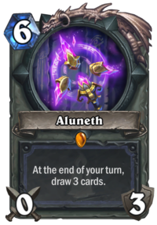

양심 ㅇㄷ?
마나지룡같은 하수인 깔아서 비밀결사 졸개 이딴걸로 빛의속도로 핸드소모시키고 알루네스로 드로우보고 딜카드로 마무리하는 덱.
일반적으로 컨트롤덱을 굴리는게 어그로덱을 굴리는 것보다 실력에 크게 좌우되기 때문에
컨트롤덱이 어그로덱보다는 양심있는 덱으로 여겨짐.
근데 이덱은 그런 컨트롤덱들을 뚜드려 패버리는 노양심의 정점에 있는 덱.
대표적 컨덱인 컨트롤흑마, 심지어 너프 이전의 하이랜더 사제마저도 얘 앞에선 1승제물임.
그나마 얘 이길수 있는 컨덱은 빅주문법사? 근데 그거 누가함ㅋ
어그로덱인데 같은 어그로덱, 특히 필드 많이 깔아서 이기는 성기사한테 약함.
하수인들 체력이 많이 낮은편이라 지불용 들고있는 사제한테도 뚜드려맞음.
이 덱은 게임이 빨리빨리 끝나서 등급전 등급 올리기에 이거만한 덱도 없음.